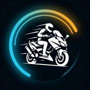

Rideboard
Gizlilik Politikası
Yürürlük tarihi: 10 Kasım 2026 (güncelleme 20 Kasım 2026: grup sesli sohbet, sürüş rotası)
Rideboard, VOGE motosikletlerin Bluetooth üzerinden yayınladığı verileri okuyup telefonda gösterge olarak gösteren ücretsiz bir uygulamadır. Bu metin uygulamanın hangi verileri nasıl kullandığını, 6698 sayılı Kişisel Verilerin Korunması Kanunu (KVKK) kapsamında aydınlatma amacıyla açıklar.
Veri sorumlusu
Samet Yay (bireysel geliştirici). İletişim: github.com/samet-y/rideboard-site/issues
Kısaca
- Hesap yok, reklam yok, izleme (tracking) yok. İsteğe bağlı grup sesli sohbet için yalnızca anonim bir kimlik ve seçtiğiniz takma ad kullanılır.
- Sürüş verileriniz ve sürüş rotalarınız yalnızca telefonunuzda tutulur; bize gönderilmez.
- Hava durumu için yaklaşık konumunuz (~2 km'lik ızgaraya yuvarlanmış) yalnızca hava servislerine gönderilir.
- Grup sesli sohbette sesiniz Türkiye'deki sunucumuz üzerinden yalnızca odadakilere canlı iletilir; kaydedilmez.
- Uygulama motosiklete hiçbir veri yazmaz; yalnızca okur.
Telefonunuzda tutulan veriler
Aşağıdakiler yalnızca cihazınızda, uygulamanın kendi klasöründe saklanır. Uygulamayı sildiğinizde silinir; çoğunu uygulama içinden de silebilirsiniz. Telefon yedeğiniz (iCloud / Google) açıksa yedeğe dahil olabilir.
- Motor verileri: Bluetooth ile okunan hız, devir, akü voltajı, motor sıcaklığı, yakıt seviyesi, kilometre gibi değerler.
- Ham veri kayıtları: Her sürüşte motordan gelen paketler otomatik olarak bir CSV dosyasına yazılır. Bu dosyalarda konum yoktur. 90 günden eski kayıtlar ve toplam 1 GB'ı aşan en eski kayıtlar otomatik silinir.
- Sürüş özetleri: Tarih, mesafe, süre, ortalama ve en yüksek hız.
- Sürüş rotaları: Uygulama açıkken ve konum izni verilmişse, her sürüşte gidilen yol (GPS noktaları) ile başlangıç ve bitiş yerinin adı. Bir sürüşü silince rotası da silinir. Ayarlar'dan rota kaydını kapatabilir ya da tüm rotaları silebilirsiniz.
- Akü ve yakıt geçmişi, ayarlar.
Bu veriler, siz paylaş butonuyla bir dosyayı göndermediğiniz sürece cihazınızdan çıkmaz.
Konum
Konum izni verirseniz uygulama:
- GPS hızınızı göstermek ve hız göstergesinin sapmasını hesaplamak için konumu yalnızca cihazda kullanır;
- sürüş rotasını haritada göstermek için gidilen yolu yalnızca cihazda saklar. Rota haritasını açtığınızda harita görüntülerini MapTiler'dan ister (yalnızca görüntülenen bölgenin harita parçaları); başlangıç ve bitiş yerinin adını bulmak için bu iki noktayı bir kez telefonunuzun adres servisine (iOS'ta Apple, Android'de Google) gönderir;
- yağmur, fırtına, buzlanma ve rüzgâr uyarıları için bulunduğunuz yeri ve gidiş yönünüzde 5, 10 ve 20 km ilerideki noktaları yaklaşık 2 km'lik bir ızgaraya (0,02°) yuvarlayarak Open-Meteo'ya gönderir; radar görüntüsü için ise RainViewer'dan yalnızca yaklaşık 300 km genişliğindeki harita parçalarını ister.
Bu servisler isteği işlerken IP adresinizi görebilir; kendi gizlilik politikaları geçerlidir. Telefondaki sürüş rotaları dışında konum geçmişi tutulmaz. Hava uyarılarını ve rota kaydını Ayarlar'dan kapatabilir ya da konum iznini vermeyebilirsiniz; uygulamanın geri kalanı çalışmaya devam eder.
Bluetooth
Bluetooth yalnızca motosikletinizin gösterge modülüne bağlanıp verilerini okumak için kullanılır. Uygulama motora hiçbir komut ya da veri göndermez.
Grup sesli sohbet (isteğe bağlı)
Grup sekmesini kullanmazsanız bu bölümdeki verilerin hiçbiri oluşmaz. İlk kullanımda bu bilgileri okuduğunuzu uygulama içinde onaylamanız istenir. Kullanırsanız:
- Anonim kimlik ve takma ad: Uygulama sunucumuzdan rastgele bir cihaz kimliği ve gizli anahtar alır. Gizli anahtar telefonunuzun güvenli alanında (iOS Keychain / Android Keystore) saklanır; sunucuda yalnızca özeti (hash) tutulur. Seçtiğiniz takma ad odadaki diğer kişilere gösterilir. E-posta, telefon numarası ya da gerçek ad istenmez.
- Odalar: Kurduğunuz ya da katıldığınız odaların adı, davet kodu, üyeleri, oluşturulma ve son kullanım zamanı sunucuda tutulur. Odadan ayrıldığınızda üyeliğiniz silinir; boşalan oda tamamen silinir. 90 gün boyunca kimsenin kullanmadığı odalar otomatik olarak silinir.
- Ses ve mikrofon: Mikrofon yalnızca bir odaya bağlıyken kullanılır. Sesiniz aktarım sırasında şifrelenerek (WebRTC) sunucumuz üzerinden yalnızca o odadaki kişilere canlı iletilir. Ses kaydedilmez ve saklanmaz. Uygulamada mikrofonu sessize alabilir ya da yalnızca dinleyebilirsiniz.
- Sunucu: Sohbet sunucusu bize aittir ve Türkiye'de (İstanbul) bulunur. Bu veriler yurt dışına aktarılmaz, üçüncü taraflarla paylaşılmaz ve yalnızca sesli sohbet hizmetini sunmak için kullanılır.
- Teknik kayıtlar: Sunucu, güvenlik ve arıza tespiti için bağlantıların IP adresini ve zamanını teknik kayıtlarda tutar. Bu kayıtların boyutu sınırlıdır ve en eskileri otomatik olarak silinir.
12 ay boyunca kullanılmayan anonim kimlik ve takma ad, odalardaki üyelikleriyle birlikte otomatik olarak silinir. Uygulamayı silseniz bile bu süre dolana kadar sunucuda kalır; daha önce silinmesini isterseniz "Haklarınız" bölümündeki yoldan bize yazın.
Bildirimler
Hava ve akü uyarıları telefonunuzda oluşturulan yerel bildirimlerdir; bildirim için herhangi bir sunucu kullanılmaz.
Paylaşım
Bir kaydı ya da sürüş geçmişini paylaş butonuyla gönderdiğinizde dosya, seçtiğiniz uygulamaya (e-posta, mesajlaşma vb.) siz tarafından gönderilir. Bize bir kayıt gönderirseniz bunu yalnızca motor protokolünü çözmek ve uygulamayı geliştirmek için kullanırız ve istediğinizde sileriz.
Çocuklar
Uygulama motosiklet kullanıcılarına yöneliktir; 18 yaş altındaki çocuklara yönelik değildir ve bilerek çocuklardan veri toplamaz.
Haklarınız
KVKK'nın 11. maddesi kapsamındaki haklarınız (bilgi talep etme, düzeltme, silme vb.) için yukarıdaki iletişim adresinden bize ulaşabilirsiniz (orada herkese açık yazıldığı için kişisel bilgi paylaşmayın; size özel bir yol iletiriz). Grup sesli sohbet dışındaki verileriniz cihazınızda tutulduğu için çoğunu uygulamadan ya da uygulamayı silerek kendiniz silebilirsiniz.
Değişiklikler
Uygulamaya hesap, sıralama listesi ya da isteğe bağlı veri paylaşımı gibi özellikler eklenirse bu politika güncellenir ve uygulama içinde ayrıca onayınız istenir.
Rideboard bağımsız bir projedir; VOGE ya da Loncin ile resmi bir bağlantısı yoktur. VOGE, ilgili sahiplerinin ticari markasıdır.
Privacy Policy
Effective date: 10 November 2026 (updated 20 November 2026: group voice chat, ride routes)
Rideboard is a free app that reads the data VOGE motorcycles broadcast over Bluetooth and shows it on your phone as a dashboard. This policy explains what data the app uses and how.
Controller
Samet Yay (individual developer). Contact: github.com/samet-y/rideboard-site/issues
In short
- No account, no ads, no tracking. The optional group voice chat uses only an anonymous ID and the nickname you choose.
- Your riding data and ride routes stay on your phone only; they are not sent to us.
- For weather, your approximate location (rounded to a ~2 km grid) is sent only to weather services.
- In group voice chat your voice is sent live, through our server in Turkey, only to the people in the room; it is not recorded.
- The app never writes anything to the motorcycle; it only reads.
Data kept on your phone
The following is stored only on your device, in the app's own folder. It is removed when you delete the app, and most of it can also be deleted inside the app. It may be included in your phone backup (iCloud / Google) if enabled.
- Motorcycle data: values read over Bluetooth such as speed, engine speed, battery voltage, engine temperature, fuel level and odometer.
- Raw data recordings: during every ride the packets from the motorcycle are written to a CSV file automatically. These files contain no location. Recordings older than 90 days, and the oldest ones beyond 1 GB in total, are deleted automatically.
- Ride summaries: date, distance, duration, average and maximum speed.
- Ride routes: while the app is open and location permission is granted, the path of each ride (GPS points) and the names of its start and end places. Deleting a ride deletes its route. You can turn route recording off or delete all routes in Settings.
- Battery and fuel history, settings.
This data does not leave your device unless you send a file with the share button.
Location
If you grant location permission, the app:
- uses your location on the device only to show your GPS speed and to measure the speedometer's error;
- keeps the path of each ride on the device only to show it on a map. When you open a route map it requests map images from MapTiler (only the tiles of the area shown); to name the start and end places it sends these two points once to your phone's address service (Apple on iOS, Google on Android);
- for rain, storm, ice and wind alerts, sends where you are and points 5, 10 and 20 km ahead in your direction of travel, rounded to a grid of about 2 km (0.02°), to Open-Meteo; for the radar image it requests only map tiles about 300 km wide from RainViewer.
These services may see your IP address while handling the request; their own privacy policies apply. Apart from the ride routes on your phone, no location history is kept. You can turn weather alerts and route recording off in Settings or not grant location permission; the rest of the app keeps working.
Bluetooth
Bluetooth is used only to connect to your motorcycle's dashboard module and read its data. The app never sends any command or data to the motorcycle.
Group voice chat (optional)
If you do not use the Group tab, none of the data in this section is created. The app asks you to confirm that you have read this before first use. If you use it:
- Anonymous ID and nickname: the app gets a random device ID and secret key from our server. The secret is kept in your phone's secure storage (iOS Keychain / Android Keystore); the server keeps only its hash. The nickname you choose is shown to the other people in your room. No email, phone number or real name is asked for.
- Rooms: the name, invite code, members and creation time of the rooms you create or join, and when they were last used, are kept on the server. When you leave a room your membership is deleted; an empty room is deleted completely. Rooms nobody uses for 90 days are deleted automatically.
- Voice and microphone: the microphone is used only while you are connected to a room. Your voice is encrypted in transit (WebRTC) and sent live, through our server, only to the people in that room. Audio is never recorded or stored. You can mute the microphone or only listen.
- Server: the chat server is ours and located in Turkey (Istanbul). This data is not transferred abroad, not shared with third parties, and used only to provide the voice chat.
- Technical logs: for security and troubleshooting the server keeps the IP address and time of connections in technical logs. These logs are size-limited and the oldest entries are deleted automatically.
An anonymous ID and nickname that are not used for 12 months are deleted automatically, together with their room memberships. Even if you delete the app they stay on the server until then; to have them deleted sooner, contact us as described under "Your rights".
Notifications
Weather and battery alerts are local notifications created on your phone; no server is used for them.
Sharing
When you share a recording or your ride history, you send the file yourself to the app you choose (email, messaging, etc.). If you send us a recording, we use it only to decode the motorcycle protocol and improve the app, and delete it on request.
Children
The app is meant for motorcycle riders; it is not directed at children under 18 and does not knowingly collect data from children.
Your rights
To exercise your rights (access, correction, deletion, etc.) contact us through the contact link above (posts there are public, so do not share personal information; we will reply with a private channel). Apart from group voice chat, your data is kept on your device, so you can delete most of it yourself in the app or by deleting the app.
Changes
If features such as accounts, leaderboards or optional data sharing are added, this policy will be updated and the app will ask for your consent separately.
Rideboard is an independent project and is not affiliated with VOGE or Loncin. VOGE is a trademark of its respective owner.